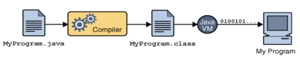
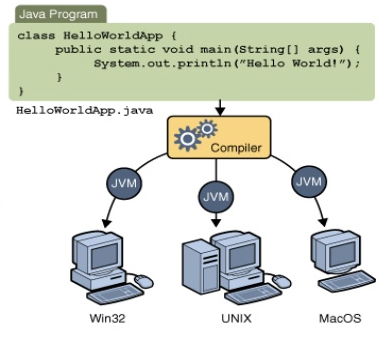
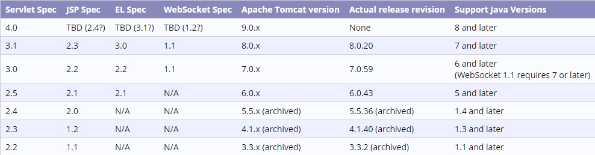
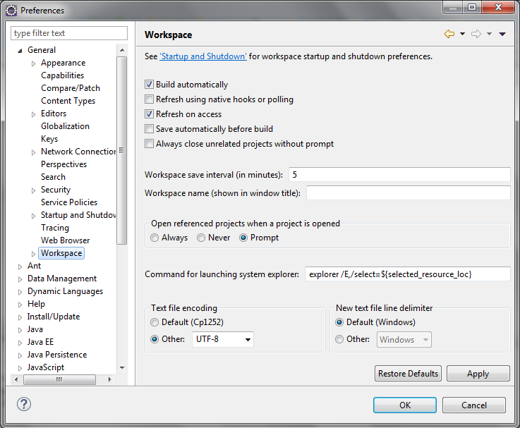
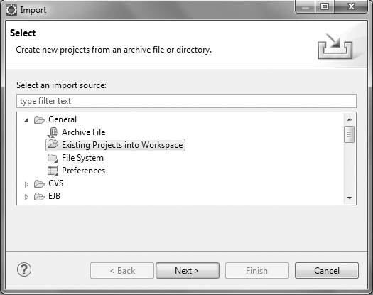
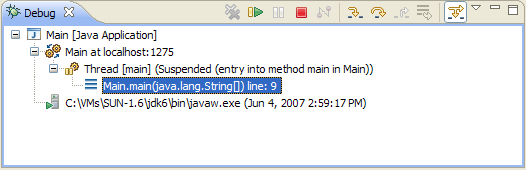
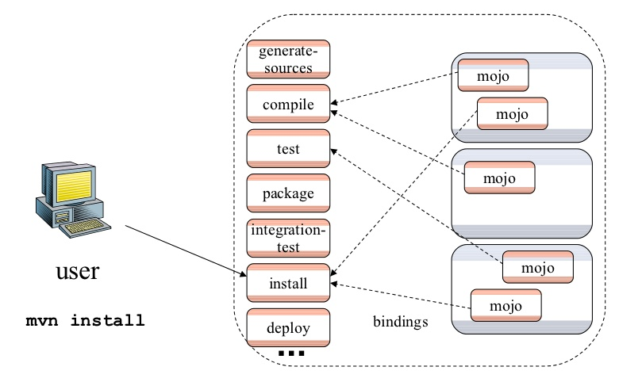

Develop Tools
(Java New Graduated Course)
Java Develop Tools
- Java - Programming language
- Tomcat - Web Server
- Mysql & Toad - Database and tool for creating and testing PL/SQL code
- Eclipse - Integrated development environment (IDE)
- Maven - Softwate project management
Java™
(Programming language)
What is Java?
- Computer programming language.
- Using English based commands, instead of having to write in numeric codes.
- Has a set of rules that determine how the instructions are written.
- Has Compiler and Interpreter.
- Run on Java Virtual Machine (JVM).
What is (JVM)?
- JVM (Java Virtual Machine) is an abstract machine. It is a specification that provides runtime environment in which java bytecode can be executed.
- JVMs are available for many hardware and software platforms (i.e.JVM is platform dependent)

Platform dependent?
Writing codes in one operating system and execute that code on another platform.
"WORA" - Write Once and Run Anywhere

Java™ History?
- Java was started as a project called "Oak" by James Gosling at Sun Microsystems in June 1991.
- It was originally designed for use on digital mobile devices
- Sun Microsystems released the first public implementation as Java 1.0 in 1996.
- Its main focus had shifted to use on the Internet
- Over the years it has evolved as a successful language for use both on and off the Internet
- It’s still an extremely popular language with over 6.5million developers worldwide
Java™ version history
- Major release versions of Java, along with their release dates
JDK 1.0 (January 21, 1996)
JDK 1.1 (February 19, 1997)
J2SE 1.2 (December 8, 1998)
J2SE 1.3 (May 8, 2000)
J2SE 1.4 (February 6, 2002)
J2SE 5.0 (September 30, 2004)
Java SE 6 (December 11, 2006)
Java SE 7 (July 28, 2011)
Java SE 8 (March 18, 2014)
Java™ Platform?
Why Choose Java?
How to install Java?
Go to link. http://www.oracle.com/technetwork/java/javase/downloads/index.html Click on Download JDK.
Once the download is complete, run the exe to install.
How to install Java?(cont.)
Set Environment Variable
JAVA_HOME = <JDK installation directory>
PATH = %JAVA_HOME%\bin;%PATH%
CLASSPATH = %JAVA_HOME%\lib\tools.jar;
Go to command prompt and type javac
C:\Users\vgan>javac
Usage: javac <options>
where possible options include:
-g Generate all debugging info
-g:none Generate no debugging info
-g:{lines,vars,source} Generate only some debugging info
-nowarn Generate no warnings
-verbose Output messages about what the compiler is doing
-deprecation Output source locations where deprecated APIs are used
-classpath <path> Specify where to find user class files and annotation processors
...
First java program
Create A.java file.
class A {
public static void main(String args[]){
System.out.println("First Java Program");
}
}
Compile the code using command, javac A.java
C:\java>javac A.java
Run the code using command, java A
C:\java>java A
Questions?
Tomcat
(Web Server)
Application Server for java?
Most Popular Application Servers in 2014
- Tomcat 41%
- Jetty 31%
- JBoss/WildFly 18%
- WebLogic 6%
- Glassfish 4%
- Resin
- IBM WebSphere
What is Tomcat?
- It is an open source web server and servlet container by Apache Softwate Foundation.
- Implement Java Server Page (JSP) and Java Servlet specifications.
- Provides a "pure java" web server environment , works on various operating system.
- Includes tools for confuguration and management.
Tomcat Versions?
- Last stable version 8.0.20
- The mapping between the specifications and the respective Apache Tomcat versions is:

Tomcat Component?
What is Catalina?
- Tomcat's servlet container
- Implements servlet and JavaServer Pags(JSP)
- Realm element represents "database" of usernames, passwords, roles assigned to those users
What is Coyote
- Tomcat's HTTP Connector component
- Supports HTTP 1.1 protocal for web server or application container
- Listens for incoming connections on specific TCP port
- Forwards the request to Tomcat Engine
- Execute JSP and servlets when Tomcat Engine send back a response to the request client
What is Jasper?
- Tomcat's JSP Engine
- Parses JSP files to complie them into Java code as servlets
- The compiled java code can be handled by Catalina
- Jasper detects changes JSP files and recompiles at Runtime
Cunfiguration File?
- server.xml
- The main configuration file.
- Change all ports - HTTP(S), Shutdown
- Specifying JNDI resources in Engine
- Realm security
- . . .
- web.xml
- Configures servlets and web applications
- tomcat-user.xml
- Roles, users, and passwords
- catalina.bat
- Specifying JVM parameters and arguments
How to Start / Stop?
- Running Tomcat
- bin/startup.[bat/sh]
- Stopping Tomcat
- bin/shutdown.[bat/sh]
Deploy Web Application?
- Manual - place the *.war file with in 'webapps' folder
- Automagic - use the Admin console to deploy the *.war
- Eclipse - add new server, deploy application onto server
How to install Tomcat
Go to link. https://tomcat.apache.org/download-80.cgi Click on Download.
Once the download is complete, run the exe to install.
Tomcat run jsp
- hello.jsp
<html>
<head><title>html test</title></head>
<body bgcolor="#fdf5e6">
<h1>Html test</h1>
Hello , this is jsp.
</body>
</html>
Tomcat run servlet
- HelloServlet.java
public class HelloServlet extends HttpServlet {
public void doGet(HttpServletRequest request, HttpServletResponse response) throws ServletException, IOException {
response.setContentType("text/html");
PrintWriter out = response.getWriter();
String docType =
"<!DOCTYPE HTML PUBLIC \"-//W3C//DTD HTML 4.0 " +
"Transitional//EN\">\n";
out.println(docType +
"<HTML>\n" +
"<HEAD><TITLE>Hello</TITLE></HEAD>\n" +
"<BODY BGCOLOR=\"#FDF5E6\">\n" +
"<H1>Hello , this is servlet</H1>\n" +
"</BODY></HTML>");
}
}
Tomcat run servlet(cont.)
- Config servlet in web.xml
HelloServlet
HelloServlet
HelloServlet
/HelloServlet
Setting tomcat user
The available roles are
- manager-gui — Access to the HTML interface.
- manager-status — Access to the "Server Status" page only.
- manager-script — Access to the tools-friendly plain text interface that is described in this document, and to the "Server Status" page.
- manager-jmx — Access to JMX proxy interface and to the "Server Status" page.
Setting tomcat user(cont.)
- Setting tomcat-users.xml
<role rolename="manager-gui"/>
<role rolename="manager-script"/>
<role rolename="manager-jmx"/>
<role rolename="manager-status"/>
<user username="tomcat" password="tomcat" roles="manager-gui,manager-script,manager-jmx,manager-status"/>
Questions?
Mysql & Toad
(Database and Tool)
What is Mysql
- Mysql is the most popular open source database system
- Mysql is a relational databasemanagement system
- It is a free SQL server database server lisensed with Oracle
Why Mysql
- Scalability and Flexibility
- High Performance
- High Availability
- Robust Transactional Support
- Web and Data Warehouse Strengths
- Strong Data Protection
- Comprehensive Application Development
- Management Ease
- Open Source Freedom and 24 x 7 Support
- Lowest Total Cost of Ownership
How to install Mysql
Go to link. http://dev.mysql.com/downloads/ Click on Download.
Once the download is complete, run the exe to install.
Connect to mysql with mysql command
mysql command
mysql -u <user> -h <host> -p
e.g.
C:\Users\vgan>mysql -uroot -p
Enter password: *********
Welcome to the MySQL monitor. Commands end with ; or \g.
Your MySQL connection id is 75
Server version: 5.1.69-community MySQL Community Server (GPL)
Copyright (c) 2000, 2013, Oracle and/or its affiliates. All rights reserved.
Oracle is a registered trademark of Oracle Corporation and/or its
affiliates. Other names may be trademarks of their respective
owners.
Type 'help;' or '\h' for help. Type '\c' to clear the current input statement.
mysql>
SQL-structured query language
- Sql is now the standard language for relational DBMS
- It has statements for data definitions, queries and updates
Mysql command
- mysql
- create
- alter
- select
- insert
- update
- delete
- drop
- . . .
Sql Basic command
Learning from http://www.w3schools.com/sql/default.asp
Exercise
- Create Database name "mydb"
- Create Table "Category"
- Id int (5) not null auto_increment
- name varchar 50 not null"
- Create Table "Product"
- Id int (5) not null auto_increment
- name varchar 50 not null"
- category_id (FK from Category)
- Use mysql command insert Sample data to both table.
Whai is toad?
- Toad is software used for development and administration and various relational databases
- Used Structured Query Language(SQL) to communicate with the databases
- Managed and supported by Quest Software
Toad History?
- Jim McDaniel designed Toad for his own use in the late 1990s
- He called it Tool for Oracle Application Developers: "TOAD" for short
- McDaniel made the tool available to others first as shareware and later as freeware, distributing it freely over the Internet
- Quest Software, acquired TOAD in October 1998 and became part of Dell in September 2012
Support Database?
- Oracle Database
- Microsoft SQL Server
- IBM DB2
- MySQL
- PostgreSQL
- . . .
Toad platforms?
- 32-bit/64-bit Windows platforms
- Microsoft Windows Server
- Windows XP, Windows Vista
- Windows 7 and 8
- Toad MAC Edition
How to install Toad?
Go to link. http://software.dell.com/products/toad-for-mysql/ Click on Download Freeware.
Once the download is complete, run the exe to install.
Toad Eclipse plugin
- Using the IDE
- Help > Eclipse Marketplace...
- Find "Toad" and install
- Or visit http://marketplace.eclipse.org/content/toad-extension-eclipse
- Drag install plugin to running eclipse workspace.
How to use Toad?
Questions?
Eclipse
(Integrated development environment)
BEST JAVA IDES FOR JAVA
- NETBEANS
- ECLIPSE
- INTELLIJ
- SPRINGSOURCE
- ANDROID STUDIO
- JDEVELOPER
- BLUEJ
- JCREATOR
- JBUILDER
- . . .
What is Eclipse?
- An Integrated Development Environment
- Provides many features to ease Java programming (and others, e.g. C/C++)
- Editor
- Debugger
- Source Control
- . . .
Eclipse History?
- Version 1.0 - November, 2001
- . . .
- Now Version 4.4 (Luna) June, 2014
- Plan Version 4.5 (Mars) June, 2015
Installing and Running Eclipse?
- Download the latest version at http://www.eclipse.org/
- Installation is very simple
- Just unpack the downloaded package
- Running Eclipse
- Then click eclipse.exe (under Windows)
- Run eclipse (under Linux)
- Eclipse will start running if all the prerequisites are met
Workspace?
- Workspace is where your projects and programs are stored.
- Usually some directory in the file system.
- The workspace is set when Eclipse starts.
Set Encode for work space

Plugin installation?
- Using the IDE
- Help > Eclipse Marketplace...
- Or visit http://marketplace.eclipse.org/
- Drag install plugin to running eclipse workspace.
create project?
- File > new > project
- Select Existing Projects into Workspace.
- Find the archive file on your hard disk. Click Open to select it.

Import existing project?
- File > Import
- Select Existing Projects into Workspace.
- Find the archive file on your hard disk. Click Open to select it.
Exercise
- Create Dynamic Web Project contains with
- hello.jsp
- HelloServlet.java
- Deploy war file on tomcat
Debug program
- Debug View

Resume (F8)
 Terminate (Ctrl + F2)
Terminate (Ctrl + F2)
 Step Into (F5)
Step Into (F5)
 Step Over (F6)
Step Over (F6)
Step Return (F7)
How to debug program?
Questions?
Maven
(Softwate project management)
What is Maven ?
- Standardized build infrastructure
- Build Tool
- Dependency Management Tool
- Quality Tool
- Opensource Apache Project
Maven Philosophy
- Convention over Configuration
- Ease the build process
- Base practises patterns
- Consistent build
POM
- Project Object Model
- Contains all meta data of project
- Name
- Packageing Type
- Dependencies
- One POM == One Artifact
- POM relationships
- Inheritance
- Aggregation
POM Example
4.0.0
com.test
springjpa
war
0.0.1-SNAPSHOT
springjpa Maven Webapp
http://maven.apache.org
junit
junit
4.11
test
Standard Directory Layout
Under this directory you will notice the following standard project structure
- src/main/java
- src/main/resources
- src/main/webapp
- src/test/java
- src/test/resources
- target
Build Lifecycle
- 3 different lifecycle
- default
- clean - cleans up artifacts
- site - generates site documentation
- Invoke with 'mvn' command line
Phases (lifecycle default)
- validate
- compile
- test
- package
- integration-test
- verify
- install
- deploy
Plugin
- Set of goals (Mojos)
- Plugin Goals can be bound to phases
- Depending on packageing type a list of goals are assigned to phases
Available Plugins https://maven.apache.org/plugins/index.html
Plugin sample
- maven-clean-plugin
- maven-compiler-plugin
- maven-jar-plugin
- maven-war-plugin
- maven-surefire-plugin
- maven-release-plugin
- maven-checkstyle-plugin
plugin binding phase

Packaging Type
- Specifies artifact type
- Configure default lifecycle
- Available types - jar, war, ear, ...
- Default packaging is 'jar'
Dependencies
- Identified by - groupId, artifactId, version, scope
- Scope affects dependencies transitivity and build classpath
- Available scope - compile, provided, runtime, test
- Retrived from public locations
- Store on local repo (~/.m2/repository)
Repository Manager
- Proxies between your organization and the public Maven repositories
- Sonatype Nexus
- Maven Archiva
Maven & IDEs
- Supported in all major IDEs
- From pom.xml generate IDE specific files
- mvn eclipse:eclipse
- mvn idea:idea
- Directly read pom.xml and setup project
How do I setup Maven?
Go to link. http://maven.apache.org/download.cgi Click on Download link.
Once the download is complete, run the exe to install.
How do I setup Maven?(cont.)
Set Environment Variable
Window
M2_HOME = <Maven installation directory>
PATH = %M2_HOME%\bin;%PATH%
Mac
export M2_HOME = <Maven installation directory>
export %M2_HOME%\bin
Go to command prompt and type mvn
C:\Users\vgan>mvn --version
Apache Maven 3.0.5 (r01de14724cdef164cd33c7c8c2fe155faf9602da; 2013-02-19 20:51:28+0700)
Maven home: d:\Maven\apache-maven-3.0.5
Java version: 1.7.0_21, vendor: Oracle Corporation
Java home: d:\Java\jdk1.7.0_21\jre
Default locale: en_US, platform encoding: Cp1252
OS name: "windows 7", version: "6.1", arch: "amd64", family: "windows"
mvn archetype:generate -DgroupId={project-packaging} -DartifactId={project-name} -DarchetypeArtifactId=maven-archetype-quickstart -DinteractiveMode=false
mvn compile
mvn test
mvn package
mvn install
<dependency>
<groupId>com.mycompany.app</groupId>
<artifactId>my-app</artifactId>
<version>1.0-SNAPSHOT</version>
<scope>compile</scope>
</dependency>
mvn archetype:generate \
-DarchetypeGroupId=org.apache.maven.archetypes \
-DarchetypeArtifactId=maven-archetype-webapp \
-DgroupId=com.mycompany.app \
-DartifactId=my-webapp